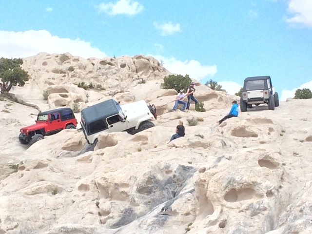

A popular spot, Little Moab features some fairly intense obstacles. Just a short drive from most in the Utah County area, Little Moab is a common destination for those wanting to test their rigs. Often referred to as more of an offroading playground than a trail.
